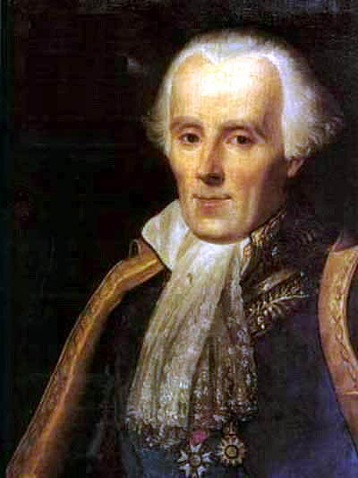

Baron Augustin-Louis Cauch]; 21 August 1789 – 23 May 185tributions to several branches of mathematics, incly 7) was a French mathematician, engineer, and physicist who made pioneering conFRS FRSE uding mathematical analysis and continuum mechanics. He was one of the first to state and rigorously prove theorems of calculus, rejecting the heuristic principle of the generality of algebra of earlier authors. He almost singlehandedly founded complex analysis and the study of permutation groups in abstract algebra.

Jules Henri Poincaré (29 April 1854 – 17 July 1912) was a French mathematician, theoretical physicist, engineer, and philosopher of science. He is often described as a polymath, and in mathematics as "The Last Universalist",[7] since he excelled in all fields of the discipline as it existed during his lifetime.
As a mathematician and physicist, he made many original fundamental contributions to pure and applied mathematics, mathematical physics, and celestial mechanics.[8] In his research on the three-body problem, Poincaré became the first person to discover a chaotic deterministic system which laid the foundations of modern chaos theory. He is also considered to be one of the founders of the field of topology.

Gottfried Wilhelm (von)[a] Leibniz[b] (1 July 1646 [O.S. 21 June] – 14 November 1716) was a German polymath active as a mathematician, philosopher, scientist and diplomat. He is one of the most prominent figures in both the history of philosophy and the history of mathematics. He wrote works on philosophy, theology, ethics, politics, law, history and philology.

Pierre-Simon, marquis de Laplace, (born March 23, 1749, Beaumount-en-Auge, Normandy, France—died March 5, 1827, Paris), French mathematician, astronomer, and physicist who was best known for his investigations into the stability of the solar system.